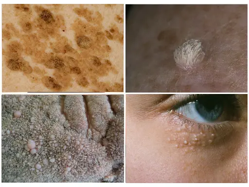
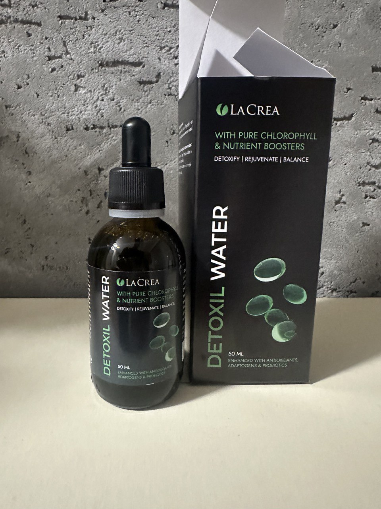
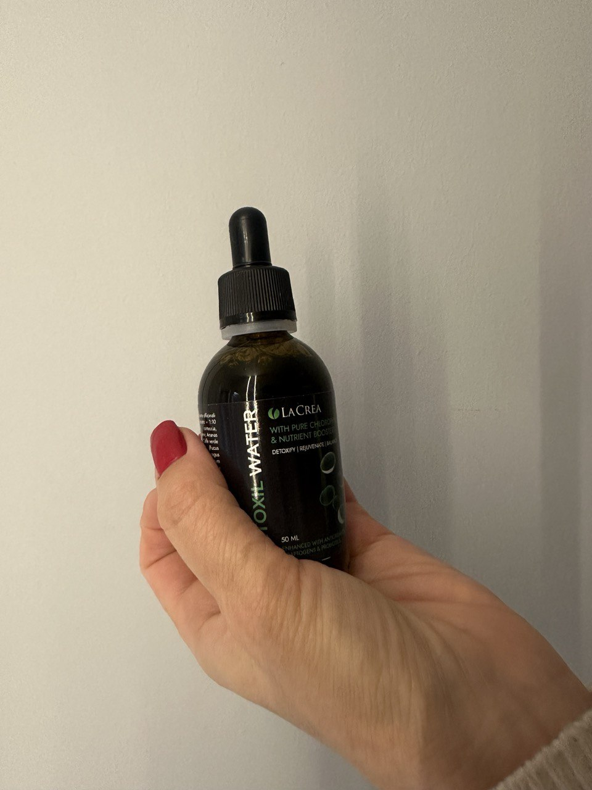
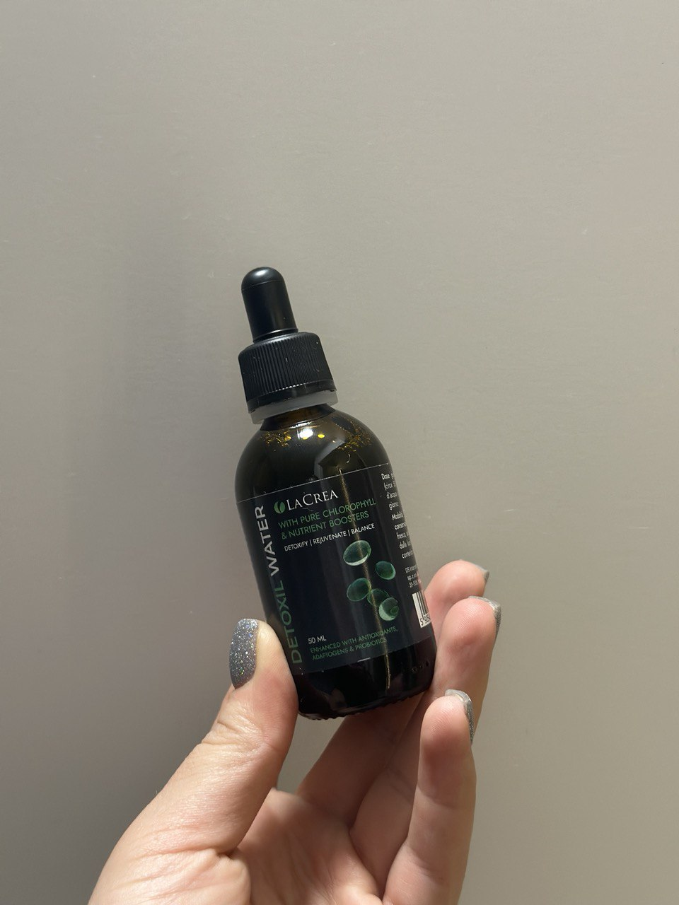

A műsor Dr. Csúsz Gáborral történő forgatása során esemény történt, amelynek eredményeként „orvosi szakértők” egy pocsolyában találták magukat. A híres orvos megdöbbentette a nyilvánosságot nyilatkozatával. Az orvosi személyzet különösen dühös volt.
Dr. Csúsz Gábor nyíltan kijelentette: „Ön elárasztja a különböző betegségekről és vírusokról szóló információs mezőt, de szemet hunysz arra a problémára, amely Magyarországon évente 95 ezer embert öl meg! Miért nem mondja senki, hogy a legtöbb haláleset oka a paraziták által okozott humán papillomavírus (HPV). Miért hallgattok mindannyian arról a tényről, hogy már létezik olyan gyógyszer, amely néhány hét alatt teljesen megszabadíthatja Önt a parazitáktól és 100% -ban eltávolíthatja a papillómákat?”
Paraziták! Ők az emberek fő gyilkosai. Nem csak Magyarországon, hanem az egész világon. És mindannyian úgy viselkedtek, ahogy kellene. Nem ismer olyan fejlett eszközöket, amelyek egyszer és mindenkorra megoldják ezt a problémát.
„A kemoterápia nem gyógyít! Nem öli meg a parazitákat, hanem a májat és a gyomrot!” - Dr. C. Gábor
Az emberi papillomavírus az áldozatok számát tekintve az első számú betegség a világon. És a paraziták okoznak papillómákat a testen! Szó szerint belülről mérgezik a testet. A boncolás utáni hirtelen halálesetek 94% -ában a patológusok férgeket találnak a belekben és a belső szervekben!
Különösen a parazita betegségek a „természetes” halálesetek körülbelül 77-78% -át teszik ki. Abszolút értelemben ez körülbelül 95 000 haláleset jelent tavaly, -ban, és hihetetlen intézkedéseket teszel egy szinte tünetmentes betegség ellen, amely ráadásul nem jelent meg azonnal, és valószínűleg nem fog eltűnni.
„Az emberek a paraziták miatt halnak meg! A fertőzés első és fő tünete a papillómák megjelenése a testen. Emlékezz erre egyszer és mindenkorra!” — mondja Dr. Csúsz Gábor.
A statisztikák megdöbbentőek! A járvány 25 000 életet követett el, ugyanakkor közel 95 ezer magyar halt meg parazitákban.
A vicces és szomorú dolog az, hogy a Covid-19 súlyos eseteinek 99,87% -a immunhiányos embereknél fordul elő a HPV és a parazita invázió miatt! Ha nem lennének ilyen betegségeik, nem lennének tüneteik. Ismét senki sem beszél erről, mert azonnal felmerül a kérdés: mi az oka az ilyen nagy számú betegnek?
Kiderült, hogy a covidok 97% -a parazitákkal fertőzött! Kollégáimmal állandóan szembesülünk ezzel a műtétek során! A magok túlnyomó többségében paraziták vannak! Rengeteg kutatás és bizonyíték van erről! De mindenki hallgat erről, mert nem beszélnek róla! Vagy nem éri meg, ami valószínűbb.
Karsai Anita: „Beneš úr, ön bátor ember, ha nem fél az ilyen kijelentésektől! Soha nem gondoltam volna, hogy a paraziták okozhatják a halált!”
Dr. Csúsz Gábor: „Olyan öreg vagyok, hogy semmitől sem félek. És már nem tudok csendben maradni. Nem lehet üresből üresre menni, és nem kínálhat speciális kezelést. Orvosként megtettem a Hippokrates-esküt, és ezt követem.
És mindig felelősséget vállalok azért, amit mondok. A világjárványnak vége, van oltás, és a világ megtapasztalta, mint minden előtte járványt. Attól tartok azonban, hogy a kapzsiság és a piacképesség vírusa örökre velünk lesz. A vírus ellen még nincs vakcina.”
Karsai Anita: „Miről beszélsz?”
Dr. Csúsz Gábor: Ami azt illeti, hogy vannak olyan betegségek, amelyeket orvostudományunk egyáltalán nem gyógyít. Valaki komolyan aggódik a parazitafertőzések miatt? És nézzünk szembe vele, hazánkban az emberek nem a legfelelősebbek. Csak akkor mennek orvoshoz, ha nagyon rossz. Senki sem veszi észre a hasi fájdalmat, székrekedést, puffadást. De amikor a szív szúrni kezd, gyakran késő.
Több millió parazita kolónia fertőzi meg az egész testet, és behatol a szívbe, a vesékbe, a májba és még az agyba is!

Súlyos betegségekkel dolgozom és rehabilitálok súlyosan beteg betegeket. Láttam olyan dolgokat, amelyek miatt a hajam végére áll! Az emberek alábecsülik a veszélyt, azt gondolva, hogy a paraziták férgek, amelyek a belekben élnek. De ez nem így van! Sokféle parazita létezik! Vannak mikroszkopikusak is, de nagyon mérgezőek! Mérgezik a testét, belépnek a szívedbe, mérgezik mérgezéssel, ischaemiához, szívelégtelenséghez, magas vérnyomáshoz és ennek következtében szívrohamhoz és stroke-hoz vezetnek.
A szívet érintő helminták közé tartozik a Taenia solium, az echinococcus (Echinococcus granulosus), a trichinella (Trichinellaspiralis). Az Echinococcus az Echinococcus helminth lárva stádiuma. És ezek nem minden típusú paraziták, amelyek megölhetik az embereket!

A papillómák a parazita fertőzés biztos jele!
Az orvosok azonban inkább a következmények kezelésére szoktak, mint a betegségek okait. Hazánkban elterjedt a korrupció. És a csalás elterjedt a specialitásomban. És a gyógyszeripari vállalatok és orvosi képviselőik a felelősek az orvosok megvesztegetéséért Magyarországon. És most, hogy a Covid-19 megijeszti az embereket a fejükből, a vállalkozások virágznak. Minden tünetre külön teszteket és gyógyszereket adhatnak el. Aztán hibáztatják a haláleseteket a járványra. Utálom ezeket a dolgokat.”
Nem kezeljük a parazita fertőzéseket
Karsai Anita: „Tehát azt akarja mondani, hogy a gyógyszertárakban értékesített összes modern parazitaellenes gyógyszer nem hatékony?”
Dr. Csúsz Gábor: „Az embereknek hivatalosan felírt parazitaellenes gyógyszerek egy fontos funkciót látnak el: pénzt pumpálnak a betegek zsebéből az orvosi oligarchák zsebébe.
Ezt nézd meg. A beteg beveszi a tablettát, és úgy tűnik, hogy állapota javul. De a paraziták rendkívül kitartóak! Tojásaik rendkívül kemény héjjal rendelkeznek. És amint a gyógyszer hatása leáll, ismét szaporodnak, lárváik belülről elfogyasztják a testet, a véráramon keresztül belépnek a szívbe és az erekbe. A szívizom gyengül és gyorsan használhatatlanná válik. Ugyanakkor a gyógyszertárból származó gyógyszerek nagyon mérgezőek, nemcsak a parazitákra, hanem a májra is káros hatással vannak!
Sokan, akiknek parazitája van, úgy gondolja, hogy elegendő egy tablettát bevenni, és a probléma megoldódik. De ez nem így van! Egy tabletta nem segít, lehetetlen! És ha folyamatosan agresszív kémiai tablettákat iszik, akkor gyorsabban elpusztítják a testet, mint a paraziták. Ez egy ördögi kör. De a gyógyszertárak számára nyereséges eladni őket; a parazitaellenes gyógyszerek drágák. Minél többet árulnak, annál jobb a gyógyszertárak és a gyógyszertári üzlet számára.”
Karsai Anita: „Tehát mit tegyünk?!”
Dr. Csúsz Gábor: „Mit tegyek? Harcolj korrupt rendszerünk ellen, ne avatkozz be a hatékony gyógyszerek kínálatába, ne emelje a hatékony gyógyszerek árát, ne adjon el külföldön!
És maguknak az embereknek nem szabad lustának lenniük, és cselekedniük kell a fertőzés első jeleinél, ahelyett, hogy várnák, hogy a paraziták elpusztítsák a testét. A testünk nagyon okos rendszer. Mindig ad tippeket. De sajnos az emberek nem akarják hallgatni testüket, és figyelmen kívül hagyják azokat a jeleket, amelyek szerint a testnek segítségre van szüksége. Az emberek orvosokhoz fordulnak, amikor egész testük már tele van parazitáktól. Mindig azt mondom a pácienseimnek, hogy minél hamarabb cselekszenek, annál valószínűbb, hogy sikeresen megtisztítják őket.
Elvégezhet egy egyszerű tesztet, amelynek 90% vagy nagyobb valószínűsége annak megmutatására, hogy a szervezetben vannak-e paraziták vagy sem.
Tudja meg, fertőzött-e parazitákkal!
Hány éves vagy?
Férfi vagy nő?
Milyen gyakran érzi magát fáradtnak és gyorsan fáradt?
Álmatlanságban vagy más alvási problémákban szenved?
Milyen gyakran vannak gyomor- és bélproblémái (puffadás, böfögés, hasmenés, székrekedés)?
Van-e papillómája a testén?
Milyen gyakran van fejfájásod?
Gyakran ideges vagy, dühös, ideges?
Gyakran megfázik?
Észrevettél már rossz leheletet?
Sajnos a parazitákkal való fertőzés valószínűsége az Ön esetében 92%. Ügyeljen arra, hogy hatékony parazitaellenes szereket használjon, de csak természetes összetételű! Ellenkező esetben a belső szervek nem ellenállnak az invazív terhelésnek a kémiai komponensek hatásával kombinálva.
Karsai Anita: „Beszéltél egy forradalmi gyógyszerről, amely megszabadulhat a parazitáktól? Mi ez a gyógyszer? Miért reagálnak a gyógyszertárak a nevére, mint a vámpírok a napfényre?
Dr. Csúsz Gábor: „A Detoxil water. vízről beszélek. Ez egy egyedülálló, CSAK gyógyszer, amely elpusztíthatja az összes parazitát, eltávolítja az emberi papillomavírust a testből, és teljesen biztonságos.
A "Detoxil water " a Magyar Molekuláris Biológiai Központ fejlesztésének eredménye. Egy genfi nemzetközi kongresszuson ez a fejlesztés elnyerte az európai „Áttörés az orvostudományban” díjat, és a világ vezető parazitológusai nagyra értékelték.
Az analógokkal ellentétben a "Detoxil water" nagyon erős, de ugyanakkor teljesen természetes termék. Csak vegye be a Detoxil water naponta egyszer, hogy megszabaduljon a parazitáktól.
Mivel a Detoxil water nem tartalmaz vegyszereket, vitaminokkal, táplálékkiegészítőkkel és bármilyen gyógyszerrel együtt használható - ez nem befolyásolja és nem változtatja meg tulajdonságait. A gyógyszer szedése előtt nem kell speciális étrendet követnie, nem kell megtagadnia az étkezést vagy bármilyen készítményt készítenie. Kívánatos (de nem szükséges), hogy ne hagyja ki a gyógyszer szedését, ami könnyű: egy kényelmes kis csomag lehetővé teszi, hogy mindig magával legyen.
A "Detoxil water " folyam nemcsak teljesen kiküszöböli a parazitákat, hanem javítja a bél mikroflóráját is, erősíti az immunrendszert és helyreállítja a testet mérgezés után.
Úgy tűnik, hogy az ilyen elismerés után a gyógyszertáraknak sorban kell várniuk a Detoxil water értékesítésének jogát. Az államnak ezt a jogorvoslatot jogi védelem alatt kell tennie. De nem. Abszolút, halálos csend. Olyan, mintha senki sem látta volna az áttörést.
És az orvosi ipar utálja ezt a képzést. Több száz gyógyszernévük, értékesítési tervük és bevételi tervük van. És a Detoxil water önmagában megakadályozhatja ezeket a terveket.
Ezért gyűlölték annyira a Detoxil water . Nem hagyhatod figyelmen kívül. Végül is van nemzetközi elismerés, tanúsítványok, tudományos cikkek és több ezer elégedett beteg. Ezért választották a bojkottstratégiát. Képzelje el, hogy a Detoxil water nem létezik.
| 100%-os | parazita tisztítás |
| Az emésztőrendszer | 100% -os normalizálása |
| 80%-os | vércukorszint normalizálása |
| 75%-kal | jobb jólét |
| 70% | Soha nem volt beteg a Detoxil water bevétele után . |

Megkezdjük a test öngyógyító folyamatát.
Karsai Anita: „Meg tudja mondani, hogy mit tartalmaz a Detoxil water?”
Dr. Csúsz Gábor: „Örömmel mondom el. Csak természetes összetevőket tartalmaz, így nem kell aggódnia a mellékhatások miatt, és a mája megköszönni fogja!
Spárga
Illóolajat, nagy mennyiségű flavonoidot és szerves savakat tartalmaz. Kifejezett
parazitaellenes hatása van, valamint koleretikus, immunmoduláló, görcsoldó, gyulladáscsökkentő,
antibakteriális és antimikrobiális hatása.
Guarana
Illóolajokat és vitaminokat tartalmaz. Parazitaellenes, antibiotikus és
gyulladáscsökkentő hatása van. Enyhe vízhajtó, hashajtó, koleretikus és görcsoldó hatása van. Megőrzi és
helyreállítja az emésztőrendszer egészségét.
Zöld kávé
Sok biológiailag aktív anyagot tartalmaz. Diuretikus és hashajtó hatású, és
elősegíti a paraziták és toxinok gyors eltávolítását a szervezetből. Segíti a belső szervek
regenerálódását és felgyorsítja tevékenységük normalizálódását.
Mate elhagyja
Nagy mennyiségű vitamint és ásványi anyagot, alkaloidokat és zsírsavakat
tartalmaz. Erős antioxidáns és tonizáló hatása van. Természetes antiszeptikus és antibiotikum. Gyorsan
semlegesíti a parazita mikroorganizmusokat. Támogatja az anyagcsere normalizálódását.
Pitypang gyökér
Eltávolítja a szervezetből a méreganyagokat és bomlástermékeket. Antibiotikus hatása van. Javítja
az emésztést és javítja az immunitást. Ez egy enyhe koleretikus és hashajtó szer. Zsírsavakat és
illóolajokat tartalmaz, amelyek növelik a mirigyek szekrécióját az emésztőrendszerben.
Karsai Anita: „Hogyan működik ez a gyógyszer?”
Dr. Csúsz Gábor: „A gyógyszer fokozatosan tisztítja a testet, fokozatosan hat, lépésről lépésre:
1 hét
A fáradtság és az apátia eltűnik a paraziták toxikus hatásának csökkenése miatt. Az emésztés és az étvágy normalizálódik. A hangulat és a teljesítmény javulását már a tanfolyam első hetében észreveheti.
2. hét
A növényi kivonatok egyéb egészségügyi előnyeinek köszönhetően az immunrendszere megerősödik, és csökkennek az allergiás reakciók és egyéb egészségügyi problémák.
3. hét
Amint a paraziták szervezetre gyakorolt toxikus hatása leáll, egyértelmű külső javulást és még fiatalító hatást is észlel. A bőrkiütések, beleértve a papillómákat is, eltűnnek.
4. hét
Az emésztőrendszer és az összes belső folyamat normalizálódik, a túlsúly eltűnik, a vérnyomás normalizálódik, és a szív úgy működik, mint az óramű. A tanfolyam befejezése után sok embernek olyan egészségügyi problémái vannak, amelyek évek óta zavarja őket. 10-15 évvel meghosszabbítja az életét!
Megszabaduljon 7 betegségtől 7 hét alatt!
Karsai Anita: „Mit kapunk a Detoxil water tisztító tanfolyam után?”
Dr. Csúsz Gábor: Ó, egy Detoxil water tanfolyam után az ember sokat tanul! A test teljesen megtisztult, és sokan azt mondják, hogy úgy érzik, mintha újjászülettek volna. Nézze meg saját maga:
1. A nyomás olyan, mint egy űrhajós.
Először is, ez a magas vérnyomás teljes megszüntetése. A Detoxil water 5 hetes rendszeres használata után a test érrendszeri hálózata teljesen megtisztul. Más szavakkal, az erek újjáélesztődnek, és könnyen „elnyomhatják” a vérnyomás ingadozását. Legyen szó idegességről vagy fizikai aktivitásról, a helyreállított edények kiegyenlítik az ingadozásokat, és stabil 120-80 nyomást tartanak fenn.
2. Az agy működésének javítása.
A Detoxil water kezelés után a vért 73% -kal tisztítják, és javul az agyi keringés.
A betegek lelkesen jelentik, hogy:
- ➥ A memória javul.
- ➥ Az alvás, a letargia és a gyengeség normalizálódik.
- ➥ Megállítja a tinnitus.
- ➥ A fejfájás leáll.
3.Javítja a látásélességet és regenerálja a szaruhártyát.
A "Detoxil water " nemcsak a nagy erekből és artériákból, hanem a legkisebb kapillárisokból is eltávolítja a méreganyagokat. Különösen sokan vannak a szemekben. Ez a retinális sejtek megújulásához vezet és javítja a szem izomtónusát.
- ➥ A látásélesség 0,5—2,1 egységgel nő.
- ➥ normalizálja a szemnyomást.
- ➥A szürkehályog tüneteinek csökkentése.
4. A duzzanat eltűnik.
Visszaállítja a megfelelő vesefunkciót és a folyadékcserét a szervezetben. A vesék abbahagyják a víz visszatartását, és nincs szükség diuretikumok szedésére.
- ➥ Nincs több fájdalom és duzzadt lábak.
- ➥ A has zsugorodik, ahogy csökken a szervek duzzanata.
- ➥ A folyadék elhagyja a tüdőt, és a légzés könnyebbé válik.
5. A gyomor és a belek munkája javul.
A paraziták által okozott legsúlyosabb problémák a következők:
- ➥ Puffadás, fokozott gáztermelés, böfögés.
- ➥ Székproblémák.
- ➥ Emésztőrendszeri rendellenességek, rossz lehelet.
- ➥ Gyomorhurut, fekélyek, gyomorégés, fokozott gyomorsavasság.
6. Visszaállítja a szívet.
Az aorta tisztítása jótékony hatással van a szívizom tónusára. A tachycardia az esetek 93% -ában eltűnik, az ischaemia pedig az esetek 99% -ában gyógyul.
- ➥ A pulzus és a pulzusszám normalizálódik. .
- ➥ A szívfájdalmak enyhülnek.
- ➥ 17-szeresére csökkenti a szívroham kockázatát.
7. A bőr állapota javul.
- ➥ A papillómák és a szemölcsök eltűnnek.
- ➥ A bőr tisztábbá, hidratáltabbá válik, a ráncok kisimulnak.
- ➥ A kiütések és pattanások eltűnnek, a bőr frissé válik.
8. Az immunrendszer elkezd működni.
Immunitás jön létre a belekben. A paraziták gyengítik testünk immunvédelmét. Az immunitás nemcsak a vírusoktól, hanem a most divatos Covid-19-től is véd. Az erős immunrendszer fő funkciója a rákos sejtek elleni védelem. Az erős immunrendszer időben felismeri és elpusztítja a rákos sejteket. Ez megakadályozza a teljes értékű daganat kialakulását.
Az immunrendszer, amely legalább 50% -ban működik, már leküzdhetetlen akadályt jelent a vírusok számára. És ez ma is nagyon fontos.”
A gyógyszertári szövetség vezetője hallgatott a Detoxil water ről szóló jelentésután.
Balog Zoltán. A Magyar Gyógyszertári Láncok Szövetségének vezetője.

Felhívtuk az ország legjobb gyógyszerészét, és tudni akartuk, hogy egyik gyógyszertárban miért nem volt Detoxil water.
- Zoltán úr, jó napot! Meg tudja mondani, miért hagyják figyelmen kívül a magyar gyógyszertárak a Detoxil water? Hallottál erről?
- Miért próbálsz provokálni?! Nem fogok ilyen kérdésekre válaszolni!!! Ez nem a te dolgod!
- telefonkürt...
Hogyan lehet beszerezni a Detoxil water.
Karsai Anita: „Az ország főgyógyszerészével folytatott beszélgetés után világossá vált, hogy a gyógyszer nem létezik és nem lesz a gyógyszertárakban. De még mindig megveheted, ugye?
Dr. Csúsz Gábor: „Igen, minden magyar állampolgár online rendelhet Detoxil water közvetlenül a gyárból. Kivéve néhány olyan régiót, ahol erősen spekulálnak.”
Karsai Anita: „Mely régiókban nem érhető el ez az eszköz?”
Dr. Csúsz Gábor:„Eddig csak egy ilyen régió létezik - Bekes. Ott a helyi üzletemberek előálltak egy rendszerrel. Detoxil water rendeltek az időseknek nyugdíjellátásokból. Aztán egyszerűen eladták a terméket más régióknak.
Például a Békés 160 000 forintért adta el a Detoxil water egy négyhetes tanfolyamért! Látod, ez nem kérdés. Most a helyzet részben kijavult, és egy hivatalos beszállító révén a régió lakói kihasználhatják kiváltságunkat, és maximális kedvezménnyel kaphatják meg a terméket.”
Karsai Anita: „Miért lehet ezt a gyógyszert csak online rendelni?”
Dr. Csúsz Gábor: „Ez három okból történik: :
- Minőségbiztosítás. A Detoxil water közvetlenül az üzemből szállítják a fogyasztóhoz.
- Védelem a közvetítők ellen. Annak érdekében, hogy senki ne keressen 10-20-30 ezret a viszonteladáson.
- Gyors és célzott szállítás.”
Regionális juttatások a nyugdíjasok számára! !
Dr. Csúsz Gábor: „Jelenleg öt régióban működik a Szociális Támogatási Alap program. E program keretében 25% - 50% kedvezménnyel rendelhet Detoxil water . Ez egy regionális betegségmegelőzési program részeként történik.
Az ellátásokat elsősorban a magas járványügyi helyzetű régiókban élő 47 évesnél idősebb személyek nyújtják:
- ➥ Dél-Alföld,
- ➥ Közép-Dunántúl,
- ➥ ONyugat-Dunántúl,
- ➥ Dél-Dunántúl,
- ➥ ☑ Az Ön régiója
Ezért erősen ajánlom, hogy ezeknek a régióknak a lakói ne pazarolják az időt! Nem lesz második esély. Nem ismert, hogy meddig tart a program, vagy mennyi ideig tart a Detoxil water ellátása.
Szerezd meg a Detoxil water most!
Dr. Csúsz Gábor: „Ha a szociális támogatási program keretében akár 50% -os kedvezményt szeretne kapni a Detoxil water, nyissa ki az egyik ajtót, és nyerjen kedvezményt a gyógyszerre.
A promóció - (beleértve)! Ezt követően a termék csak csomagonként 22800HUF piaci értéken lesz megvásárolható.”
FIGYELEM: A "Detoxil water" forgalmazó promóciójának részeként 50% kedvezményt kaphat. Ehhez meg kell nyitnia az egyik ajtót, és kedvezményt kell kapnia, töltse ki az alábbi megrendelési űrlapot. A promóciós termékek száma korlátozott.
KÜLÖNÖSEN OLVASÓINK SZÁMÁRA KÖZZÉTESSZÜK A HIVATALOS LOTTÓT.
A TÖBBI KEDVEZMÉNYT
OSZTJUK KI MINDENKINEK!
Vegyen részt az ajándékban, és akár 50% kedvezményt kap a Detoxil water vásárlásából.
TALÁLD KI, MELYIK AJTÓ MÖGÖTT VAN AZ 50% KEDVEZMÉNY
Uživatel vytiskne zprávu

Üdvözlettel, Dr. Csúsz Gábor


A rendelést gyorsan kiszállították.
Tisztelettel, Dr. Csúsz Gábor.
Üdvözlettel, Dr. Csúsz Gábor
Üdvözlettel, Dr. Csúsz Gábor
Tisztelettel, Dr. Csúsz Gábor
Tisztelettel, Dr. Csúsz Gábor